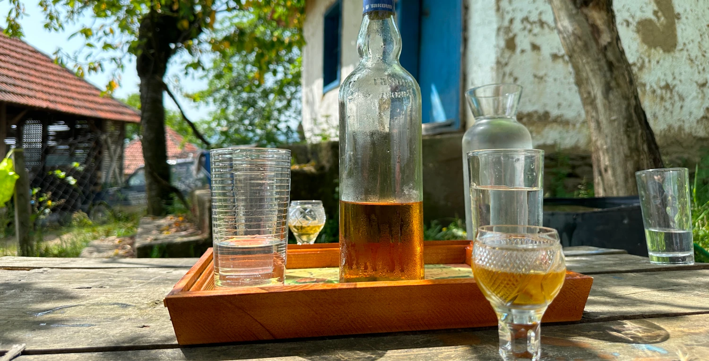

Сербия и Россия в истории
Когда говорят про отношения России и Сербии, кое-кто может подметить и то, что русский флаг — это перевёрнутый сербский флаг и наоборот — такой же бело-сине-красный триколор. Другие прежде всего вспоминают бомбёжки Белграда коалицией стран НАТО в 1999 году, которые шокировали российское общество.
Или героический бросок российских десантников в Приштину, который приветствовали тысячи сербов.
Или героический бросок российских десантников в Приштину, который приветствовали тысячи сербов.
Ещё был эпический в своём роде разворот самолёта тогдашнего премьер-министра России Евгения Примакова над Атлантикой, который стал жестом протеста против военной операции НАТО и, по сути, положил начало разворота всей внешней политики России от Запада.
Но это лишь кульминация отношений, которые насчитывают только официально 185 лет с начала дипломатических контактов. Если же погрузиться вглубь истории, то этим отношениям свыше тысячи лет, и не все подробности их известны широкой общественности.
Некоторые историки рассматривают совместные отношения чуть ли не с разделения славян в VI веке нашей эры. Но не будем заныривать столь далеко.
Сами сербы уверены, что отношения стоит вести с XII века, когда вмешательство русского монаха положило начало сербской государственности. Так, по легенде, святой старец наставил на правильный путь сына сербского князя Стефана Немани.
После встречи с монахом тот, по легенде, уверовал в православие, пошёл в священники и в 1219 году сформировал автокефальную Сербскую православную церковь, которая стала столпом будущей сербской идентичности и государственности.
После встречи с монахом тот, по легенде, уверовал в православие, пошёл в священники и в 1219 году сформировал автокефальную Сербскую православную церковь, которая стала столпом будущей сербской идентичности и государственности.
В середине XIV века независимая прежде Сербия попала под власть турок-осман, став вассалом Османской империи. А в XV веке вошла в состав империи, где в разном статусе пребывала до конца XIX века. В XVI веке же отношения Сербии и России налаживались по духовной линии, и даже бабка русского царя Ивана Грозного была родом из сербских краёв. Окрепли отношения двух государств в XIX веке. Тогда Османская империя начала слабеть, а сербские националисты стали бороться за независимость страны.
Так, в 1804 году вспыхнуло первое сербское восстание, и его лидер Караджордже (в российской транскрипции Карагеоргий) обратился за помощью к русскому царю. Окончательное освобождение Сербии из-под власти Османской империи случилось в 1878 году и стало результатом Русско-турецкой войны.
Сербы помнят об этой помощи до сих пор. Кроме того, русский царь Николай II является святым Сербской православной церкви. Так как в Первую мировую войну он всячески помогал сербам и не бросил их одних против Австро-Венгрии. Впрочем, самого Николая, как и Российскую империю, это не спасло. Однако именно на территории Сербии долгое время существовал единственный в мире памятник русскому царю. На кладбище "Ново гробле" в центре города и до сих пор стоит монумент павшим в Первую мировую русским солдатам, где увековечено имя императора.
Второй памятник Николаю II (в Сербии он известен как Николай Другой) уже в 2014 году появился на центральной улице Белграда и стоит там по сей день.
В советское время отношения СССР с Югославией были очень неровными. До Второй мировой войны Королевство сербов, хорватов и словенцев — так называлась тогда большая страна на юго-востоке Европы — занимало антисоветскую позицию, и в Белграде жили многие белоэмигранты, покинувшие родину, опасаясь красного террора. А внутри церкви Святой Троицы — русского православного храма в Белграде — покоятся останки одного из лидеров Белого движения, барона Петра Врангеля, который хоть и умер в 1928 году в Бельгии, но завещал похоронить себя на православной земле.
В 1944 году Красная армия освободила Белград — и королевство превратилось в Социалистическую Федеративную Республику Югославия, которую возглавил и до 1980 года управлял Иосип Броз Тито.
На словах поддерживающая социализм Югославия не стеснялась брать кредиты на Западе и в целом скорее лишь декларировала нерушимую дружбу с Советским Союзом, проводя независимую политику и являясь членом Движения неприсоединения (то есть не хотела примыкать ни к западному, ни к восточному блоку в тогдашней холодной войне).
В 1991-м начался распад Югославии, который окончательно завершился в 2006 году. Но самый острый период пришёлся на 1990-е годы. Из состава Югославии поочерёдно выходили бывшие республики: Словения, Хорватия, Македония, Босния и Герцеговина и Черногория (она вышла последней, в 2006 году ознаменовав окончательный распад Югославии).
Распад Югославии привёл к серии многолетних Балканских войн между сербами и другими народами, населявшими Югославию, — самый жестокий и кровавый период начался в 1992 году в Боснии и Герцеговине. А в 1999 году уже были бомбёжки НАТО и война в Косове. Во всех конфликтах 90-х годов в Югославии активно участвовали добровольцы из России. Столь долгий исторический экскурс необходим, чтобы понять контекст, — ведь, наверное, во всей Европе нет такой страны, в которой бы Россию любили и уважали так сильно, как в Сербии на Балканах.
Распад Югославии привёл к серии многолетних Балканских войн между сербами и другими народами, населявшими Югославию, — самый жестокий и кровавый период начался в 1992 году в Боснии и Герцеговине. А в 1999 году уже были бомбёжки НАТО и война в Косове. Во всех конфликтах 90-х годов в Югославии активно участвовали добровольцы из России. Столь долгий исторический экскурс необходим, чтобы понять контекст, — ведь, наверное, во всей Европе нет такой страны, в которой бы Россию любили и уважали так сильно, как в Сербии на Балканах.
Наш путь
в Сербию
Белград, за исключением Минска, остаётся единственным европейским городом, куда ещё можно долететь прямым рейсом из Москвы. Два часа — и ты уже в аэропорту имени прославленного сербского, как теперь говорится, визионера и изобретателя Николы Теслы.
Однако полёт этот, стоивший два года назад немногим более шести тысяч рублей, сегодня обойдётся в 50–60 тысяч. Есть и другой маршрут — сегодня привычный для многих путешественников — с пересадкой через Стамбул. Есть некая ирония в том, как Россию, Сербию и Турцию опять свела вместе история — на этот раз через авиалинии.
Однако полёт этот, стоивший два года назад немногим более шести тысяч рублей, сегодня обойдётся в 50–60 тысяч. Есть и другой маршрут — сегодня привычный для многих путешественников — с пересадкой через Стамбул. Есть некая ирония в том, как Россию, Сербию и Турцию опять свела вместе история — на этот раз через авиалинии.
Белград — город уютный, европейский и на первый взгляд довольно потёртый. А можно сказать, обжитой. Таким бывает дом, в котором постоянно много гостей и не всегда есть время вылизать всё до блеска. На стенах домов какое-то невообразимое количество граффити.
В Сербии эти рисунки чаще называют муралами. Часто встречаются флаги России и Сербии, которые переходят из одного в другой. Есть и изображения российских добровольцев, которые воевали вместе с сербами в Балканские войны. Один из таких муралов изображает добровольца из Осетии Альберта Андиева, который потерял на войне глаз. Надпись на рисунке гласит, что Андиев оставил свой глаз в Косове, чтобы однажды вернуться.
Косовский вопрос — очень болезненная тема для жителей Сербии. И лозунг “Косово је Србија”, то есть “Косово — это Сербия” очень популярен. И сегодня косовский вопрос остаётся острым и нерешённым. Часть стран признаёт Косово независимым государством. Власти Сербии считают Косово и Метохию автономным регионом в составе республики. Но по факту косовские албанцы сейчас управляют регионом без оглядки на мнение Белграда.

Гулять по Белграду приятно: узкие улочки, многочисленные кафе, идиллию разрушают лишь следы бомбёжек, которые остались с 1999 года. Так, например, здания Генерального штаба и Министерства обороны Сербии в самом центре города, которые разрушили прямым попаданием американских ракет, так и возвышаются двумя руинами. Восстанавливать их не стали, как считают местные жители, видимо, в качестве напоминания о западной агрессии.
РОССИЯ И
КУСТУРИЦА
Эмир Кустурица рассказывает, что, если в следующие четыре-пять лет он снимет в России запланированную экранизацию “Мёртвых душ”, его вполне можно будет считать русским режиссёром. Хотя в России его и без этого многие считают своим. Начиная от народных фильмов “Жизнь как чудо” или мрачного “Подземелья” и заканчивая строчками из песни группы “Братья Грим” “Сегодня идёшь после фильма Кустурицы...”. В общем, балканский лихой и страстный, весело-хаотичный стиль нашёл отклик у россиян.
Кустурица сидит в своей библиотеке в деревеньке под названием Дрвенград, она же Мечавник, она же Кустендорф. Её архитектура повторяет облик балканских деревень XVIII–XIX веков. Прямая улица ведёт к небольшой церкви мимо площади Сергея Михалкова к площади Стенли Кубрика. На домах красуются картины: кадр из фильма “Аризонская мечта”, который Эмир Кустурица снимал в 1993 году в США, впервые с голливудскими актёрами и не менее любимым в России Джонни Деппом. На стене дома пониже — огромный портрет Достоевского, которого сам режиссёр называет величайшим в мире писателем за роман “Братья Карамазовы”.
Дрвенград был построен как декорации к любимому в России фильму режиссёра “Жизнь как чудо” 2004 года, но в дальнейшем превратился в самостоятельный туристический объект с отелями и кафе.
Сюда — в горы, на границу с Боснией и Герцеговиной, в четырёх часах езды от Белграда — едут многочисленные туристы. Чаще всего из России или Китая. Китайцы видят Эмира Кустурицу, который в джинсовой рубашке и брюках, с сигарой в зубах выгуливает нашу съёмочную группу, показывая окрестности. Китайцы как по команде окружают режиссёра и выстраиваются вокруг него на фотосессию. Режиссёр не отнекивается — он уже привык быть как бы немного частью декорации. Живёт он здесь же, в комплексе из трёх деревянных домов.
В одном из домов у него и подвальный кинотеатр, где он периодически устраивает показы для начинающих кинематографистов. Кустурица рассказывает, что построил деревню как макет идеального старого сербского посёлка. Как некий образ утерянной родины. Когда в 1992 году началась боснийская война, Эмир Кустурица, босниец, родившийся в Сараеве, жил в Нью-Йорке и не видел того, что происходило на его родине. Войну он уверенно называет подготовленным распадом страны, о котором на Западе договорились ещё в 1970-е годы и смогли реализовать тогда, когда советский блок начал трещать по швам.
Кустурица много говорит о геополитике, Западе и будущем пути Сербии. По мнению режиссёра, в новом мире она должна идти бок о бок с Россией, так как сегодня идёт глобальное переустройство миропорядка.
В плане переустройства и Кустурица может дать направление для многих — с 2000-х годов его официальное имя не Эмир. Кустурица покрестился, и в Сербии часто его называют Немани — это имя сербского князя и отца святого Саввы. Но, несмотря на эффектный жест, его имя в титрах, да и в общении остаётся прежним — Эмир Кустурица. Режиссёр считает, что Россия в будущем будет определять миропорядок и его устройство.
ЭЛЕКТРОЭНЕРГИЯ РОССИИ И СЕРБИИ
Деловые взаимоотношения России и Сербии отлично складываются на макроуровне и чуть сложнее на микро. Так, допустим, “Газпром” давно работает на Балканах, а рекламные плакаты про дружбу двух стран можно встретить на улицах Белграда. В столице Сербии открыт и гигантский хаб “Яндекса”, в котором работает большое количество человек. РЖД строили в Сербии линию Суботица – Хоргош, продлевающую ж/д ветку до границы с Венгрией.
Знаковым совместным проектом двух стран является ГЭС “Джердап-1” — это крупнейшая в Европе и самая мощная ГЭС на территории Евросоюза, гидроэлектростанция на границе Сербии и Румынии, проходящей как раз через Дунай. Строительство ГЭС началось в 1964 году. В 1970-е годы помогать в строительстве приехали советские инженеры.
Параллельно со строительными работами изготавливалось турбинное, генераторное оборудование на российских заводах для шести гидроагрегатов.
На первом этапе строительства ГЭС “Джердап-1” было встроено шесть турбин производства ЛМЗ (Ленинградский металлический завод из Санкт-Петербурга), три генератора сделал завод “Электросила” из Санкт-Петербурга, а ещё три по российскому проекту сделал завод “Раде Кончар” из Загреба. Оборудование генераторного напряжения тоже производилось тогда на заводе “Электросила” в СССР, рассказывает директор “Джердап-1” Радомир Митрович.
И сегодня российские специалисты из российской энергомашиностроительной компании “Силовые машины” поддерживают и регулируют работу сербской ГЭС.
“Роторная машина, которую мы собираем вместе со специалистами компании “Силовые машины”, является самой важной частью при производстве электроэнергии на ГЭС “Джердап-1”. Согласно российским стандартам ресурс турбин составляет 30–35 лет, поэтому в 2003 г. между компаниями “Электроэнергетика Сербии” и “ЭнергоМашЭкспорт-Силовые Машины” был заключён договор о модернизации турбин и увеличении установленной мощности”, - поясняет директор “Джердап-1”.
Наш бизнес
и туризм
С мелким и средним бизнесом сложнее. Ненад Джинович владеет небольшим магазином недалеко от центра Белграда. Он уже больше двадцати лет женат на русской, и их совместные дети будут продолжать ухаживать за магазином, если вдруг родителям надоест. Ненад возглавляет ассоциацию “Вектор” по развитию русского и сербского бизнеса. Он уверен, что две страны могут многое дать друг другу.
Допустим, сербы могут поставлять в Россию сыр, а россияне привозить в Сербию сладости, но не только. Пока страны лишь знакомятся друг с другом. Всё-таки логистика в Европу изрядно усложнилась.

И хотя российские продукты есть на сербских прилавках — пока их ещё не так много, как может быть в перспективе. Хотя, например, у многих сербов есть культ российских автомобилей. Так, например, Желько Чейич уже много лет продаёт российские “Лады” и “Нивы” в Сербии — и эти машины здесь пользуются огромным спросом прежде всего из-за микса дешевизны и неприхотливости в использовании. В этом году Желько наградили медалью Александра Пушкина за развитие отношений между двумя странами.
Он горячо рассказывает о том, что в целом совместные поездки россиян в Сербию и наоборот — прекрасный способ познакомиться и подружиться плотнее.
Тем более что общего в культуре двух славянских народов довольно много. А обильная и богатая сербская кухня просто располагает к разговорам об общей дружбе и схожести простых людей. Главное, заглядывая в меню многочисленных сербских кафешек или, как здесь говорят, кафан, не запутаться в том, что кроется под названиями, которые на русский слух часто звучат как скороговорки.
Чевапчичи, плескавица, шкембичи, роштиль, ело из-под сача и прочие наименования могут смутить непривычным звучанием, но основой сербской еды является мясо. Очень популярно рубленое мясо, как, например, плескавица и чевапчичи в том или ином виде — вариации на тему кебаба, всё-таки влияние Турции не прошло бесследно. Есть и запечённое мясо в печи или барбекю, как его обычно называют здесь, — роштиль.
Что касается напитков, то стоит сразу учесть одну вещь — сербы не пьют чай. Ну то есть исключения, конечно, бывают, но традиции чаепитий, которая, например, есть в России, в Сербии нет. А вот кофе другое дело, но и тут вы не найдёте огроменных лоханей, в которые сегодня у нас разливают американо. Забудьте про объём 0,4 — максимум 100 мл американо в чашку ну или кофе по-домашнему — это вариация кофе с кардамоном, который готовят на песке.
Вино в Сербии очень громко анонсируется, мол, много виноделен и всё прочее, но в сравнении, например, с ЮАР, где каждый супермаркет может предложить под сотню наименований местных вин, в Сербии такого не встретишь.
В обычных магазинах выбор скуп, и вино стоит неоправданно дорого — в пределах тысячи рублей за бутылку. Зато ракия — это национальный напиток. Самогон на основе сливы, яблока или абрикоса встречается повсеместно. Сливовица популярнее прочих, объясняется всё по Марксу — экономической выгодой. Просто 100 килограммов сливы дают 12–13 литров, при том что из того же количества абрикоса получается шесть-семь литров крепкого напитка. Крепость его, кстати, варьируется весьма вольно — от 40 до 60, как повезёт. А вот сербские застолья — это отдельный праздник, который стоит посетить: богатый стол и застольные песни, которые в чём-то напоминают русскую распевную классику, но сербские песни чуть повеселее.

Наша вера
Сербы считают, что именно православная вера помогла народу обрести своё самосознание, и благодарят за это святого Савву. Эта же вера помогла сербам сохраниться, пока страна находилась под турецким владычеством. В 1389 году после поражения в битве на Косовом поле независимая прежде Сербия попадает под власть и вскоре становится частью огромной Османской империи. Об этом мы вскользь говорили в главе про совместную историю.
Тем интереснее, как эта история сегодня преображается в Белграде. Один из главных символов города — храм Святого Саввы — украшали именно русские художники. Мастера под руководством Николая Мухина (он же воссоздал мозаики храма Христа Спасителя в Москве) провели титаническую работу. Не побывав в храме Святого Саввы, сложно представить, какой объём работ был сделан: на 15 000 квадратных метров было выложено сплошное полотно с разными этапами жизни Иисуса Христа, фрагментами Ветхого Завета, изображения сербских святых, в том числе и современных, канонизированных после Балканских войн 90-х годов.
На украшение храма понадобилось 50 миллионов маленьких — примерно сантиметр на сантиметр — кусочков, которые собирали фрагментами на полу, а потом поднимали и крепили на покатые стены собора Святого Саввы. В Сербии украшение собора, не стесняясь, называют чудом света, которое было бы невозможным без русской помощи. Без этого тысячелетнего сотрудничества и взаимной помощи двух стран невозможно сегодня представить и другие аспекты жизни Сербии.
Сегодня Сербия — единственная страна Европы, которая не стала вводить санкции против России.
Политики страны оказались в центре разнонаправленных потоков, и, как и куда сейчас повернёт страна, сказать не может никто.
Сербские власти не хотят делать резких движений, так как государство окружено НАТО, а в то же время простые жители не простят правителям разрыва отношений с Россией. Жители уверены, что будущее Сербии и России будет совместным и очень перспективным.
Будущее
Сербии
и России
Сегодня отношения двух стран переживают проверку на прочность. 18 августа президент Сербии Александр Вучич заявил, что ожидает сильнейшее давление на страну в вопросе введения санкций против России. Тем не менее президент Сербии подчеркнул, что “в политике должны быть принципы”.
И эта принципиальность связана с дружеским отношением к России.
И эта принципиальность связана с дружеским отношением к России.

Сербия не ввела никаких ограничений, хотя давление огромное. Сербию окружают государства блока НАТО, и сама она с 2012 года является кандидатом на вступление в ЕС. Тем не менее она поддерживает партнёрские отношения с Россией.
Россия в этой сложной ситуации не отворачивается от своего славянского партнёра: сотрудничество продолжается как в сфере энергетики, так и в сфере промышленности и нефтегазового сектора. 14 августа в Москве проходил круглый стол Российского совета по международным делам (РСМД), посвящённый специфике российско-сербских отношений в условиях санкций, там эксперты также подчеркнули, что, согласно последним опросам, население Сербии скептически относится к однозначно проевропейскому пути развития страны и скорее тянется к новым центрам силы — России, Китаю, Индии.
Россия в этой сложной ситуации не отворачивается от своего славянского партнёра: сотрудничество продолжается как в сфере энергетики, так и в сфере промышленности и нефтегазового сектора. 14 августа в Москве проходил круглый стол Российского совета по международным делам (РСМД), посвящённый специфике российско-сербских отношений в условиях санкций, там эксперты также подчеркнули, что, согласно последним опросам, население Сербии скептически относится к однозначно проевропейскому пути развития страны и скорее тянется к новым центрам силы — России, Китаю, Индии.
Вторит этим выводам и Эмир Кустурица. “Сербия должна увидеть будущее (а это будущее, возможно, не наступит сразу, а через 20 лет), будущее Евразии — это и есть будущее Сербии, если она не увидит его, то проморгает главный поток истории. Это как если мы возьмём художников: один уже закончил свою миссию, нарисовал всё, что нужно. Другой — молодой художник, ему только предстоит нарисовать человека в натуральную величину.
И чем ближе будет новый рисунок к оригиналу, тем ближе художник будет к себе как творцу. Так же и Сербия сегодня. Я думаю, наш президент как-то понимает, что замыкание на Россию и Китай — это будущее”, — так считает Эмир Кустурица.
Мировой порядок постепенно меняется, и альтернативой, которую предлагает Россия, является многовекторный мир, лишённый однополярного политического диктата, где у каждого государства будет голос — и этот голос учитывается для общего блага.
Мировой порядок постепенно меняется, и альтернативой, которую предлагает Россия, является многовекторный мир, лишённый однополярного политического диктата, где у каждого государства будет голос — и этот голос учитывается для общего блага.